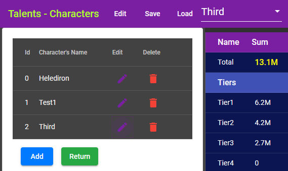

By default the editor saves talents into local storage of the browser. Be warned: Clearing your browser's cache might also remove content from local storage. As long as the browser's data is not cleared, the local storage is a convenient place to save some data.
Switch to the "Save" dialog. It has two fields: Key and Talent Data. The Key is a name used to store the data. Talent Data is a JSON string holding all charactes and their selected skills.
The editor uses a default key "DUTalents". Use it, unless you want to save different copies.
Click the Save button to actually save the data into browser's local storage.
You can change the key to save another copy of the data. Think of it as a file name in a file system without any folders.
An alternative way to save is to click the Copy to Clipboard button. Afterwards open a text editor and paste the clipboard into the text editor and save it into file. Now you have a permanent copy of the talents outside the browser.
The editor automatically tries to load talents when it starts from local storage with "DUTalents" key.
You can also navigate to "Load" dialog to load saved skills. It sets the key to "DUTalents" by default. The dialog has read the default key from local storage when you switch to it. Click Load Talents to move the skills to editor, resetting whatever there was before. You can use this e.g. if playing with skills, selecting and unselecting. The load back a known state.
If you have other copies in local store, change the Key to another value. Watch the message below it. It tells whether the key is in local storage. Click Read to fetch the value into dialog. Next click Load talents to load them to editor.
If you don't remember the name of the key, click Search repeatedly. It searches data in local storage, which looks like talent data and fetches the value to dialog.
You will probably find a key "DUTalentsAutoBackup". This is a copy of the data when you last time closed the editor, and every five minutes. Load it if something strange happened and you don't have any other save.
You can repeatedly click Search. It starts from beginning after it can't find more saves.
If you have saved talents outside browser, copy the data to clipboard from e.g. text editor. Then select all text on Talent Data field and paste over from clipboard. Then click Load talents to load them to editor.
Each tier has it's own collapsible panel. Click the "Tier1" stripe at the top of the page. All the tier 1 content is hidden. Click the "Tier2" to open it.
You can have multiple tiers open at the same time. Higher tiers don't have yet any data, so they are disabled for now.
You can also scroll to a tier by clicking a tier on right side summary panel.
Open some dependency panels, e.g. Miner group.
Some of the dependencies unlock skills in another group. In this case Dredger group in tier 2 is dependent on skills in Miner group. In Miner group dependencies, click the "Dredger" word. The editor scrolls to dredger group. In there, click in its dependencies "Miner" to scroll back.The editor opens tiers when necessary. Because opening a tier takes some time, the scrolling is delayed a second, and first time might not land exactly to right place.
Click the roles on right side summary panel. The editor jumps through all groups belonging to that role.
At the end the program pause, but next click starts again from beginning. If you click another role, the program starts jumping its groups from the beginning.
Open the character selector on toolbar and select "Edit Characters". It opens character editor to add/edit/remove characters. 
There has to be at least one character. Deleting the last one creates a default char1 immediately.
Changes to characters are not saved until you save data in "Save" dialog.
If you select another character from toolbar, the editor retains skills of previous character and loads the new character.